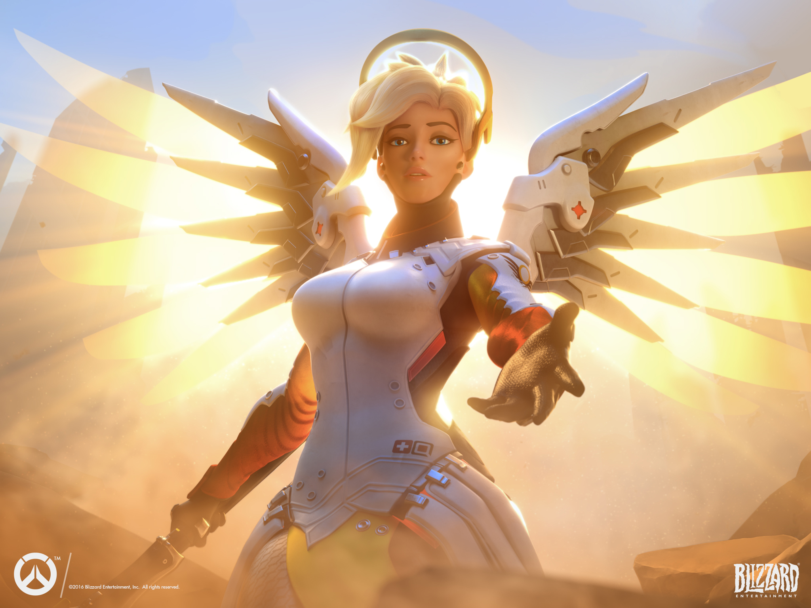
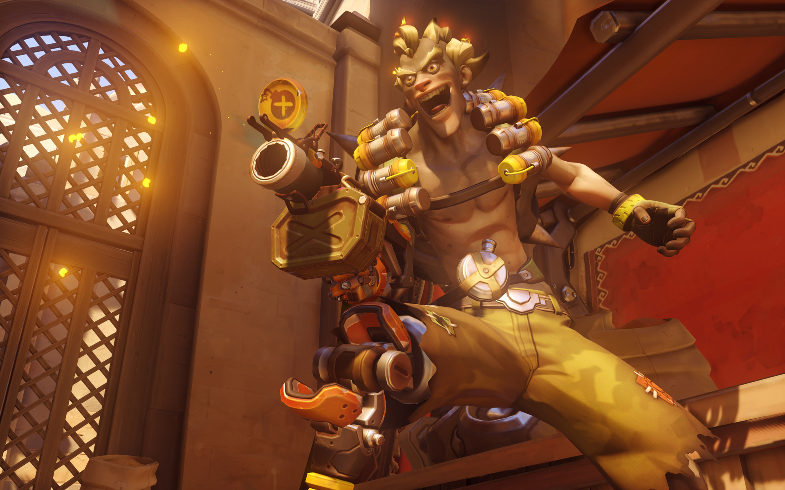

Overwatch Corner
Overwatch is a team-based, first-person shooter with m.o.b.a. elements published by Blizzard. The game has four categories of "heroes" to choose from: Offensive, Defensive, Tank, and Support. Overwatch differs from most games in the genre in that most attack and defensive coordinations are based around the various "ultimate" abilities that are unique to each hero. The game provides a handful of different modes such as escorting a payload to a destination and king of the hill. Below is some information about my favorite characters and video highlights of my gameplay using them.
McCree
McCree is a sharpshooting offensive hero. He excels at mid-range to close quarters combat, and is mostly used as an anti-flank hero to counter other heroes such as Tracer and Genji.
Ability List:
- Left Click: standard attack, fires an accurate round from his Peacekeeper.
- Right Click: secondary attack, unloads all remaining rounds in a flurry of inaccurate bursts.
- Shift: McCree slides in the direction he is currenty moving, reloading his Peacekeeper in the process.
- E: McCree throws a flashbang that detonates and temporarily stuns all targets in the nearby vicinity.
- Q (ultimate): Deadeye - McCree moves slowly and targeting reticles of all visible targets fill in based on their total health, when filled, his shots will be instant kills.

McCree Highlights by Chruffman
Mercy
Mercy is a support hero with powerful single-target healing and the capability of resurrecting teammates and boosting their damage output. Mercy is one of the most powerful healers in the game, and her damage boost and mobility makes her a great pick in almost any situation. She is, however, extremely vulnerable and unable to effectively defend herself against the other, more powerful heroes. Therefore, it is imperative that she remain with the team unless setting up a resurrection.
Ability List:
- Left Click: standard heal, Mercy channels her staff in a yellow beam that locks on to her target and provides constant healing from a medium range.
- Right Click: damage boost, Mercy channels her staff in a blue beam that locks on to her target and provides a damage boost to the target from a medium range.
- Weapon Swap: Mercy pulls out a small pistol that does minimal damage, unable to heal or damage boost while drawn.
- Shift: Mercy flies toward a friendly target
- Spacebar (hold): slows falling speed by a significant amount
- Q (ultimate): Resurrect - revives all nearby dead teammates

Mercy Highlights by Chruffman
Junkrat
Junkrat is a defensive hero equipped with an arsenal of explosive grenades and mines. He excels at locking down small rooms and corridors through the use of traps and a continuous stream of lobbed grenades from his main weapon, therefore forcing the enemy team to choose a different path. Despite his slow speed, Junkrat is quite mobile due to his ability to launch himself around the map using his remote mine.
Ability List:
- Left Click: launch a bouncing grenade.
- Right Click: detonate a placed remote mine.
- Shift: throw a remote mine that sticks to surfaces.
- E: throw a spike trap on the ground that will keep enemies in place for a short time and do a small amount of damage.
- Q (ultimate): Rip-Tire - from his current position, Junkrat launches a Rip-Tire with 100 health. The perspective is switched to the Tire and the player controls its movement. Detonate the tire for massive area damage.

Junkrat Highlights by Chruffman